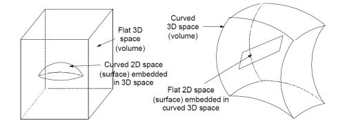

Our universe is curved or flat the simplest answer
In 4D (3 space and 1 time, often called 3+1 space), our universe is curved.
But for just the 3 dimensions of
space, it is flat.
(From now on, when we say our universe is “flat” we will mean as close to flat as we can currently
measure. Any curvature, if it exists, is very small.)
The 3 spatial dimensions of the universe are flat space-wise, but
the whole thing is curved when we include the time dimension.
Slicing Higher Dimensional Spaces into Lower Dimensional Ones
Note from the LHS of Figure 1, we can have a flat 3D space (a volume) with a curved 2D space (a surface)
embedded in it. The classic example is of a sphere in our 3D spatially flat (Euclidean) universe. In the figure, we
show a hemisphere, for ease of visualization. The surface of the (hemi)sphere is a curved 2D surface

Figure 1 - Lower Dimensional Spaces Embedded in a Space of One More Dimension
But the converse is also true. We can have a curved space with a lower dimensional
flat space embedded in it,
as shown heuristically in the RHS of Figure 1. We can slice a 3D curved space (which is a little hard to visualize,
though we tried in Figure 1) in such a way that the 2D space embedded in it is flat.
In essence, whether a space is curved or not, we can generally pick out a “slice”
of it in one lower dimension that is either curved or flat.
The formal name for slicing in this
context is foliation.
We foliate a higher D space to get a lower D space.
For any given space, there are a slew [generally infinite] number
of ways we can foliate to get lower dimension spaces of our choosing.
We have shown 3D space foliation to get 2D spaces,
but the same principle applies to any d imensions
For example, we can foliate our 4D universe and get our 3D spatial
universe at one point in time.Similarly, we can
foliate a 5D space to get an embedded 4D space.
Or a 6D space to get an embedded 5D space, etc.
When we talk, for example, of slicing (foliating) a 4D space to get a 3D space,
we call the 4D space a hypervolume, and the 3D space, a hypersurface.
Likewise, any space of dimension greater than three can be termed a hypervolume
and the subspace obtained from foliating that, a hypersurface.
Our Flat 3D Spatial Universe
So, our universe is a curved hypervolume when we consider it in the full
four dimensions of space and time.
When we consider only the 3D spatial part, as a hypersurface embedded
in 4D spacetime, that hypersurface is flat.
Note, we can also conceptualize our curved 4D universe as embedded in a flat 5D space. From that perspective,
we have a 5D flat space with an embedded 4D curved space. But then, the 4D curved space has a flat 3D (spatial)
space embedded in it.